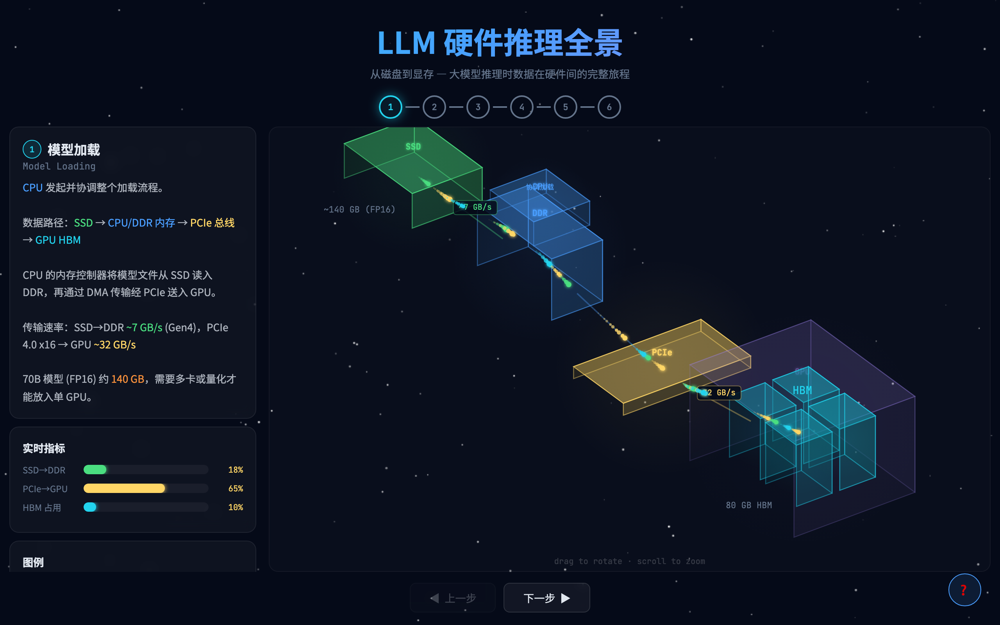
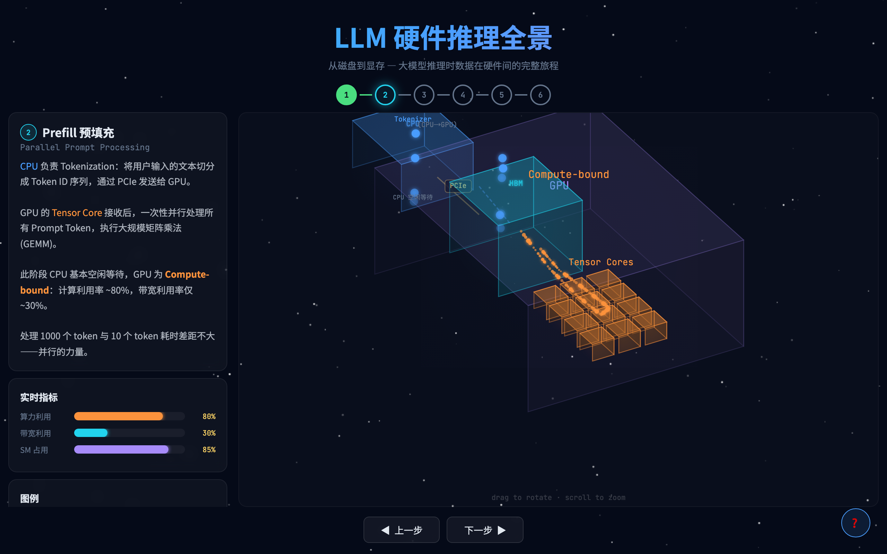
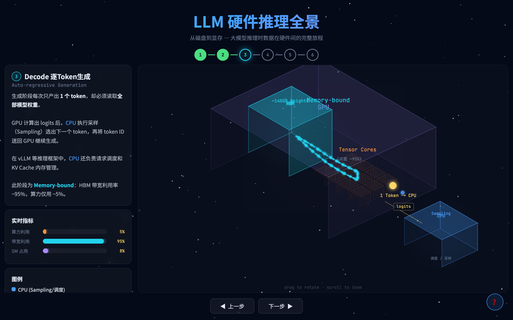
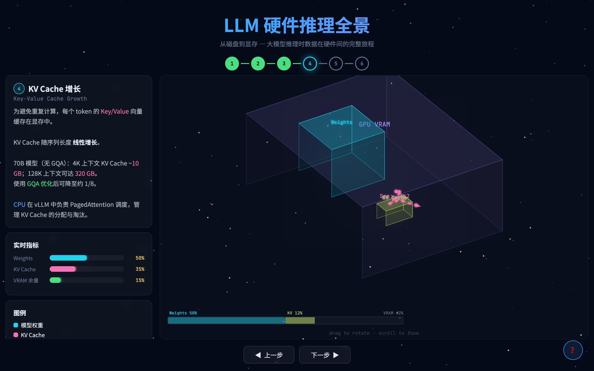
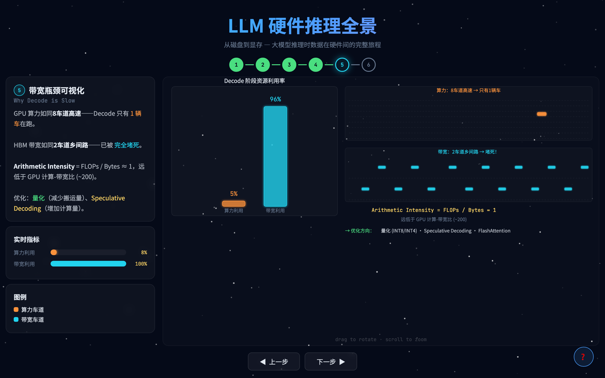
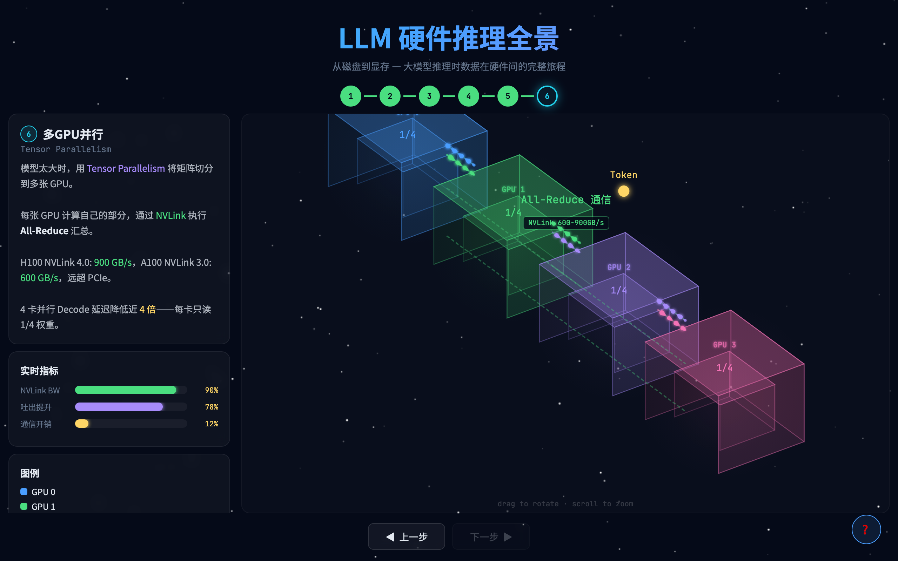

CPU 与 GPU 的分工协作 · 从磁盘到显存的 6 步全拆解
看完视频意犹未尽？以下是每个步骤的深度拆解，配合动画截图，让你彻底搞懂大模型推理的硬件全貌。

推理的第一步，是把模型权重从磁盘搬到 GPU 的显存里。这个过程完全由 CPU 发起和协调。
SSD → CPU / DDR 内存 → PCIe 总线 → GPU HBM
CPU 的内存控制器首先将模型文件从 NVMe SSD 读入 DDR 内存。现代 PCIe Gen4 NVMe SSD 的顺序读取速度约 7 GB/s。然后 CPU 通过 DMA（直接内存访问）将数据经 PCIe 总线送入 GPU，PCIe 4.0 x16 的单向带宽约 32 GB/s。
以当前主流的 70B 参数模型为例：
| 精度 | 每参数字节 | 70B 模型总大小 |
|---|---|---|
| FP32 | 4 bytes | 280 GB |
| FP16 / BF16 | 2 bytes | 140 GB |
| INT8 量化 | 1 byte | 70 GB |
| INT4 量化 | 0.5 bytes | 35 GB |
一张 NVIDIA A100 的 HBM 显存为 80 GB（HBM2e 版本，带宽约 2 TB/s）。FP16 的 70B 模型需要 140GB，一张卡根本装不下。解决办法有两种：量化压缩（INT8/INT4 降低精度）或多卡分担（Tensor Parallelism）。

模型加载完成后，用户输入一段提示词（Prompt）。这一步 CPU 和 GPU 有明确的分工。
CPU 首先执行 Tokenization（分词）：把用户输入的自然语言文本切分成一个个 Token ID 序列。比如「今天天气怎么样」可能被切成 [1234, 567, 89, 234, 56] 这样的数字序列。这些 Token ID 通过 PCIe 发送给 GPU。
GPU 的 Tensor Core 接收到所有 Token ID 后，一次性并行处理，执行大规模矩阵乘法（GEMM）。这是推理过程中 GPU 利用率最高的阶段。
| 指标 | Prefill 阶段 | 说明 |
|---|---|---|
| 算力利用率 | ~80% | Tensor Core 接近满载 |
| 带宽利用率 | ~30% | HBM 绰绰有余 |
| 瓶颈类型 | Compute-bound | 计算是瓶颈，带宽够用 |

到了生成阶段，情况彻底反转。CPU 和 GPU 的协作变得更加紧密，每生成一个 Token 都需要两者配合。
1. GPU 读取全部 140GB 模型权重，计算出下一个 Token 的概率分布（logits）
2. logits 通过 PCIe 传回 CPU
3. CPU 执行采样策略（Temperature、Top-P 等），选出最终的 Token
4. CPU 将 Token ID 送回 GPU，开始下一轮计算
每生成 1 个 Token，GPU 必须把全部模型权重从 HBM 读一遍。对于 70B FP16 模型，这意味着每步搬运 140GB 数据，但只做了极少量的计算。
| 指标 | Decode 阶段 | 说明 |
|---|---|---|
| 算力利用率 | ~5% | Tensor Core 严重闲置 |
| 带宽利用率 | ~95% | HBM 几乎被打满 |
| 瓶颈类型 | Memory-bound | 数据搬运是瓶颈，计算够用 |

在 Transformer 的 Attention 计算中，每个 Token 都会生成一组 Key 和 Value 向量。为了避免重复计算已经生成的 Token，这些 K/V 向量会被缓存在 GPU 显存中。这就是 KV Cache。
KV Cache 的大小随序列长度线性增长。以 70B 模型为例（80 层，head_dim=128）：
| 架构 | KV 头数 | 4K 上下文 | 32K 上下文 | 128K 上下文 |
|---|---|---|---|---|
| 无 GQA（64 头） | 64 | ~10 GB | ~80 GB | ~320 GB |
| GQA 优化（8 头） | 8 | ~1.3 GB | ~10 GB | ~40 GB |
LLaMA-2 70B 使用了 GQA（分组查询注意力），将 KV 头数从 64 减少到 8，KV Cache 直接压缩到原来的 1/8。这是长上下文模型的关键优化。
即便如此，128K 上下文时 GQA 版本的 KV Cache 仍需 40GB，加上模型权重 140GB，总计 180GB——至少需要 3 张 A100 才能跑。

为什么 Decode 阶段 GPU 的算力利用率只有 5%？用一个高速公路的比喻就能理解。
Arithmetic Intensity（算术强度）= FLOPs / Bytes。Decode 阶段这个比值约为 1，意味着搬运 1 字节数据只做 1 次浮点运算。而 A100 GPU 的计算-带宽比约为 200——也就是说，GPU 有能力对每字节数据做 200 次运算，但实际只做了 1 次。算力浪费了 99.5%。
| 方法 | 原理 | 效果 |
|---|---|---|
| 量化（INT8/INT4） | 减少模型权重的位宽，降低每步搬运的数据量 | INT4 量化可减少 75% 搬运量，Decode 速度提升 2-4x |
| 推测解码 (Speculative Decoding) |
用小模型先猜多个 Token，大模型一次性验证 | 将多步 Decode 合并为一次类似 Prefill 的操作，提升算力利用率 |
| FlashAttention | 优化 Attention 的显存访问模式，减少 HBM 读写次数 | Attention 计算加速 2-4x，同时节省显存 |
| GQA / MQA | 减少 KV 头数，降低 KV Cache 的带宽需求 | KV Cache 带宽需求降至 1/8（GQA）或 1/64（MQA） |

当一张 GPU 的显存装不下整个模型时，就需要把模型切分到多张卡上。Tensor Parallelism 是最常用的方式：将每一层的权重矩阵按列（或行）切分，每张 GPU 只计算自己负责的部分。
切分后的 GPU 需要在每层计算完成后做 All-Reduce 操作来汇总结果。这对 GPU 间的通信带宽要求极高。
| 互联方式 | 双向带宽 | 适用 GPU | 对比 |
|---|---|---|---|
| PCIe 4.0 x16 | ~64 GB/s | 所有 GPU | 基准 |
| NVLink 3.0 | 600 GB/s | A100 | PCIe 的 9 倍 |
| NVLink 4.0 | 900 GB/s | H100 | PCIe 的 14 倍 |
4 卡 Tensor Parallel 时，每张卡只需要读取 1/4 的模型权重。由于 Decode 阶段是 Memory-bound，权重读取量减半意味着延迟也接近减半。4 卡并行的 Decode 延迟可降低近 4 倍。
| 阶段 | CPU 干什么 | GPU 干什么 | 瓶颈 |
|---|---|---|---|
| 模型加载 | 读 SSD、发起 DMA 传输 | 被动接收权重 | PCIe / SSD 带宽 |
| Prefill | Tokenization → 空闲等待 | 并行矩阵乘法 | GPU 算力 |
| Decode | 采样、调度、KV 管理 | 逐步读权重算 logits | HBM 带宽 |
| 多卡并行 | NCCL 初始化、跨卡调度 | 分片计算 + All-Reduce | NVLink 带宽 |
覆盖 AI 全栈知识：基础概念 → Agent 工具链 → Prompt 工程 → 模型架构 → 硬件芯片 → 前沿架构
纯前端实现，无需注册，手机/电脑均可访问
本文的 3D 交互动画支持鼠标拖拽旋转、滚轮缩放，可以从任意角度观察硬件架构